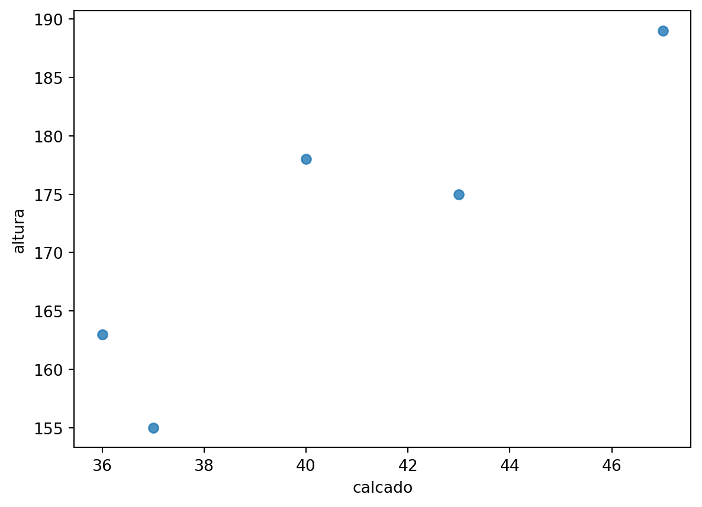
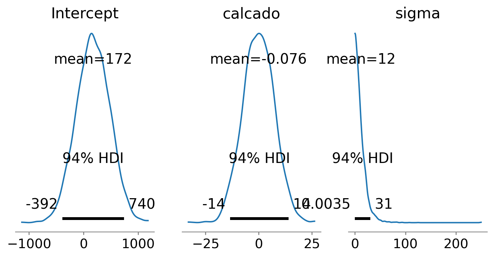
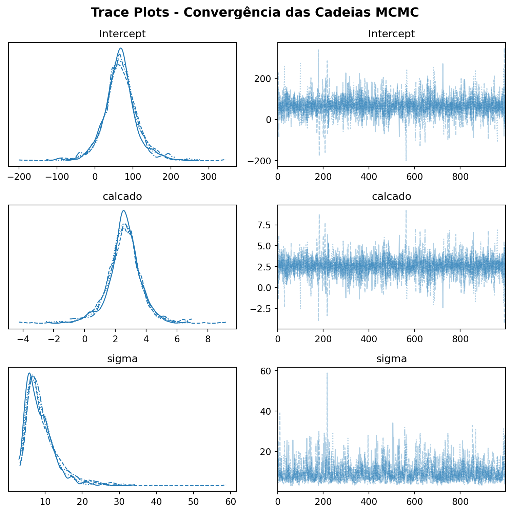
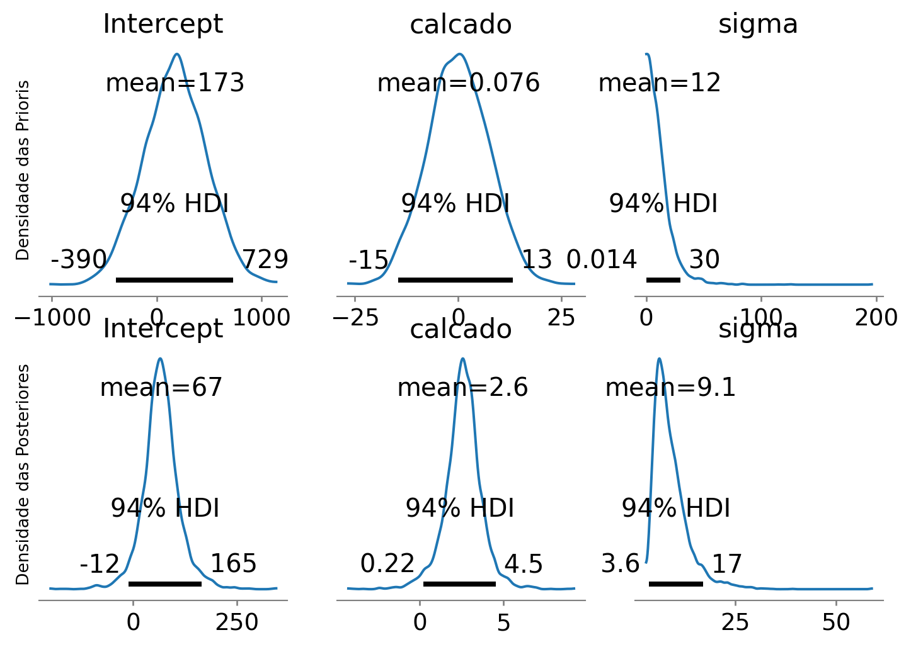
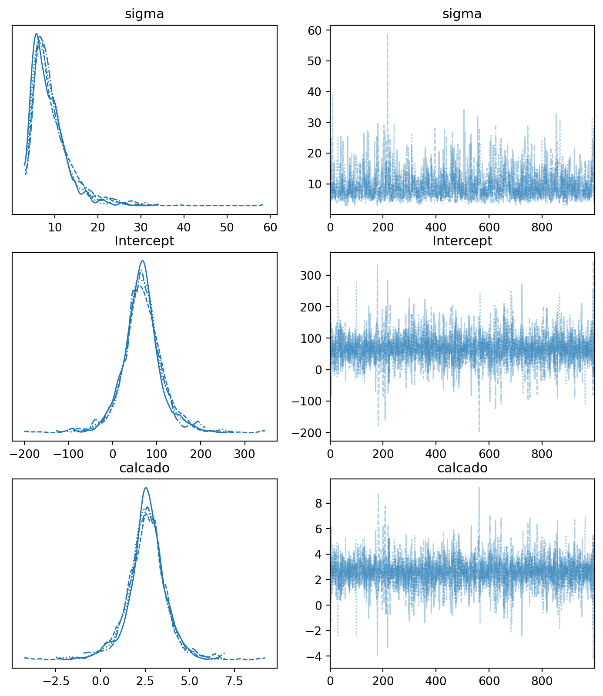
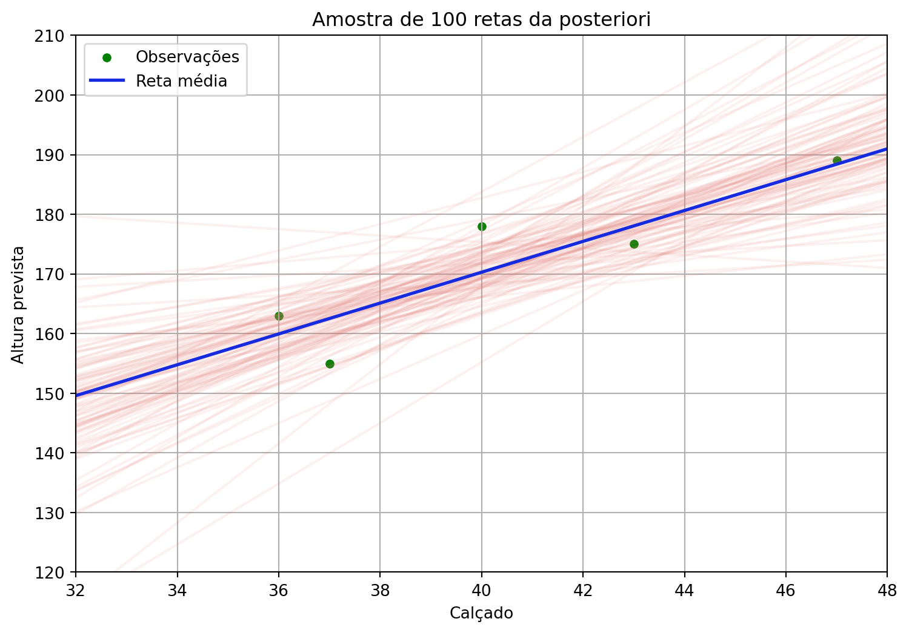
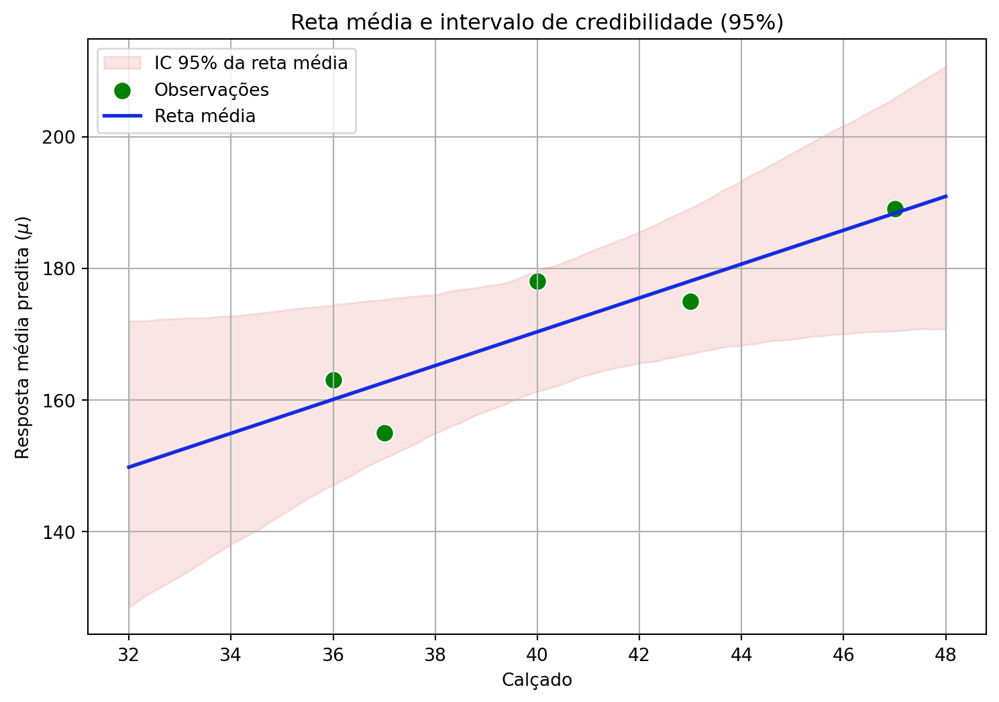
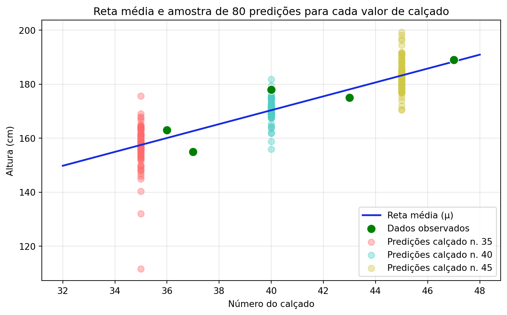
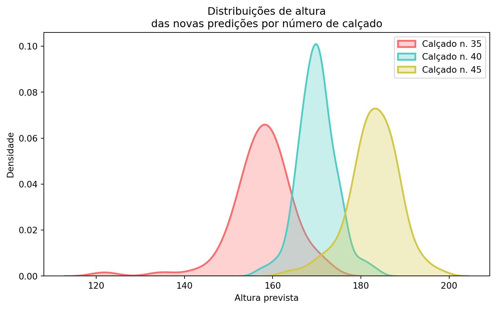

# Importação das principais bibliotecas necessárias para análise de dados, visualização, modelagem bayesiana e diagnóstico.
import arviz as az
import bambi as bmb
import pandas as pd
import numpy as np
import matplotlib.pyplot as plt
import seaborn as sns
from scipy import stats
import randomFluxo de Trabalho na Modelagem Bayesiana
Do modelo linear à distribuição a posteriori
Inferência bayesiana
Modelagem estatística
Bambi
PyMC
Fluxo de trabalho
Distribuições a priori
Inferência a posteriori
Explorando o fluxo de trabalho bayesiano em modelos de regressão linear
A modelagem bayesiana constitui um processo sistemático e iterativo para integrar dados e conhecimento prévio, visando a compreensão aprofundada de um fenômeno. O fluxo de trabalho bayesiano é um ciclo contínuo que envolve:
- Especificação do modelo: Definir a estrutura probabilística que representa o fenômeno e as relações entre as variáveis.
- Definição de priors: Incorporar conhecimento prévio sobre os parâmetros do modelo através de distribuições de probabilidade.
- Amostragem da posteriori: Computar a distribuição de probabilidade dos parâmetros, combinando priors e a verossimilhança dos dados.
- Diagnóstico: Avaliar a qualidade e a convergência dos resultados da amostragem (e.g., verificar se os algoritmos de MCMC funcionaram corretamente).
- Inferência: Extrair conclusões sobre os parâmetros e o modelo a partir da distribuição posteriori.
- Validação: Avaliar o desempenho do modelo, verificando sua capacidade de reproduzir os dados observados, prever novos dados ou se está alinhado com conhecimento externo.
- Predição: Utilizar o modelo ajustado para fazer previsões sobre observações futuras.
Descobertas ou problemas identificados em etapas posteriores (como diagnóstico ou validação) frequentemente levam à revisão e ao refinamento de decisões tomadas em etapas anteriores (como a especificação do modelo ou a escolha das priors). Para uma dsicussão detalhada do fluxo de trabalho Bayesiano, veja o texto Bayesian workflow.
Para demonstrar este fluxo de trabalho de forma prática, utilizaremos a biblioteca Bambi (BAyesian Model-Building Interface), uma interface de alto nível construída sobre o PyMC que simplifica a implementação de modelos bayesianos comuns em Python. A biblioteca Bambi utiliza uma sintaxe baseada em fórmulas, semelhante àquela encontrada em pacotes R como lme4 ou brms, permitindo que nos concentremos mais nas etapas analíticas do fluxo de trabalho do que nos detalhes computacionais subjacentes.
Nosso objetivo será percorrer estas etapas utilizando o conjunto de dados altura_adultos_subset.csv, que descreve a relação entre altura de indivíduos e número do calçado. Ao fazer isso, esperamos que você reflita criticamente sobre como a avaliação sistemática e o refinamento contínuo do modelo, facilitados por ferramentas como Bambi/PyMC, são essenciais para extrair conhecimento científico robusto sobre os processos subjacentes aos dados observados.
Nosso objetivo será percorrer cada uma das etapas do fluxo de trabalho bayesiano utilizando o conjunto de dados altura_adultos_subset.csv, que descreve a relação entre a altura de indivíduos e o número do calçado.
1 Preparação do ambiente
2 Importação e visualização dos dados
Vamos visualizar a relação entre o número do calçado e a altura. Esta etapa é importante para termos uma ideia preliminar do padrão nos dados a fim de julgarmos qual modelo adequado para descrever esta relação.
df = pd.read_csv('https://raw.githubusercontent.com/FCopf/datasets/refs/heads/main/altura_adultos_subset.csv')sns.regplot(data=df, x='calcado', y='altura', ci=None, scatter=True, fit_reg=False)
Os dados observados, sugere que um modelo linear é razoável se buscamos prever a altura de uma passoal adultra como função do número do calçado o que justifica a implementação de um modelo de regressão linear simples.
3 Especificação e ajuste do modelo
Especificamos um modelo de regressão linear bayesiano em que a altura é modelada como uma função do número do calçado. A biblioteca Bambi adota uma sintaxe onde expressamos a relação entre as variáveis na forma y ~ x. Essa notação indica que a variável resposta (y) é explicada linearmente pela variável preditora (x), o que corresponde, ao modelo:
\[
y = \beta_0 + \beta_1 x.
\]
Nesse caso, o Bambi interpreta a fórmula altura ~ calcado como uma especificação de que a altura dos indivíduos depende linearmente do número do calçado, com coeficientes a serem estimados a partir dos dados.
mod = bmb.Model("altura ~ calcado", df)
mod Formula: altura ~ calcado
Family: gaussian
Link: mu = identity
Observations: 5
Priors:
target = mu
Common-level effects
Intercept ~ Normal(mu: 172.0, sigma: 300.3331)
calcado ~ Normal(mu: 0.0, sigma: 7.3612)
Auxiliary parameters
sigma ~ HalfStudentT(nu: 4.0, sigma: 11.8659)
DicaEstrutura do modelo em Bambi
Ao inspecionair o objeto mod, podemos verificar um resumo da estrutura do modelo especificado:
- Formula:
altura ~ calcado: Descreve a fórmula estatística especificada no modelo. - Family:
gaussian: Indica a família da distribuição de probabilidade que Bambi assumiu para a variável resposta. - Link:
mu = identity: Especifica a função de ligação que conecta o modelo linear ao parâmetro da família da distribuição. - Observations:
5: Mostra o número de linhas (observações) no DataFrame que foram usadas para construir o modelo. - Priors: Distribuições a priori. Se não especificadas pelo usuário, o Bambi atribui priors padrão razoáveis parea o conjuto de dados e o modelo utilizado.
- target = mu: Indica que o modelo linear está focando em estimar a média (mu) da distribuição Gaussiana.
- Common-level effects: Lista os parâmetros associados aos termos fixos no modelo linear.
- Intercept ~ Normal(…): Define a prior para o intercepto (\(\beta_0\))
- calcado ~ Normal(…): Define a prior para o coeficiente de regressão associado à variável calcado (\(\beta_1\)).
- Auxiliary parameters: Parâmetros não diretamente modelados pelo predictor linear.
- sigma ~ HalfStudentT(…): Define a prior para o parâmetro de desvio padrão (\(\sigma\)).
- target = mu: Indica que o modelo linear está focando em estimar a média (mu) da distribuição Gaussiana.
4 Amostragem MCMC
Realizamos a amostragem MCMC (Markov Chain Monte Carlo) para obter amostras da distribuição a posteriori dos parâmetros, combinando as informações fornecidas pelos dados com as distribuições a priori.
mod_fit = mod.fit()
mod_fitarviz.InferenceData
-
<xarray.Dataset> Size: 104kB Dimensions: (chain: 4, draw: 1000) Coordinates: * chain (chain) int64 32B 0 1 2 3 * draw (draw) int64 8kB 0 1 2 3 4 5 6 7 ... 993 994 995 996 997 998 999 Data variables: sigma (chain, draw) float64 32kB 11.86 10.15 11.94 ... 4.894 6.69 8.378 Intercept (chain, draw) float64 32kB 87.33 90.64 34.92 ... 84.1 44.14 59.14 calcado (chain, draw) float64 32kB 1.803 1.763 3.224 ... 3.209 2.722 Attributes: created_at: 2025-05-30T13:46:23.157991+00:00 arviz_version: 0.21.0 inference_library: pymc inference_library_version: 5.22.0 sampling_time: 1.2499067783355713 tuning_steps: 1000 modeling_interface: bambi modeling_interface_version: 0.15.0 -
<xarray.Dataset> Size: 496kB Dimensions: (chain: 4, draw: 1000) Coordinates: * chain (chain) int64 32B 0 1 2 3 * draw (draw) int64 8kB 0 1 2 3 4 5 ... 995 996 997 998 999 Data variables: (12/17) perf_counter_start (chain, draw) float64 32kB 1.509e+06 ... 1.509e+06 process_time_diff (chain, draw) float64 32kB 0.0003775 ... 0.0003657 n_steps (chain, draw) float64 32kB 7.0 3.0 3.0 ... 3.0 7.0 diverging (chain, draw) bool 4kB False False ... False False max_energy_error (chain, draw) float64 32kB 0.73 -0.09901 ... -0.2155 smallest_eigval (chain, draw) float64 32kB nan nan nan ... nan nan ... ... reached_max_treedepth (chain, draw) bool 4kB False False ... False False largest_eigval (chain, draw) float64 32kB nan nan nan ... nan nan energy (chain, draw) float64 32kB 33.56 30.79 ... 27.58 step_size (chain, draw) float64 32kB 0.6078 0.6078 ... 0.6198 step_size_bar (chain, draw) float64 32kB 0.6792 0.6792 ... 0.702 tree_depth (chain, draw) int64 32kB 3 2 2 3 3 2 ... 3 3 2 2 2 3 Attributes: created_at: 2025-05-30T13:46:23.170103+00:00 arviz_version: 0.21.0 inference_library: pymc inference_library_version: 5.22.0 sampling_time: 1.2499067783355713 tuning_steps: 1000 modeling_interface: bambi modeling_interface_version: 0.15.0 -
<xarray.Dataset> Size: 80B Dimensions: (__obs__: 5) Coordinates: * __obs__ (__obs__) int64 40B 0 1 2 3 4 Data variables: altura (__obs__) float64 40B 178.0 163.0 175.0 155.0 189.0 Attributes: created_at: 2025-05-30T13:46:23.174230+00:00 arviz_version: 0.21.0 inference_library: pymc inference_library_version: 5.22.0 modeling_interface: bambi modeling_interface_version: 0.15.0
5 Verificação das priors
Neste exemplo as priors foram atribuídas automaticamente. Veremos como especificá-las manualmente mais adiante. Por enquanto, iremos nos concentrar em visualizar as distribuições a priori para entender as expectativas iniciais do modelo sobre os parâmetros antes de processar os dados.
mod.plot_priors(var_names=['Intercept', 'calcado', 'sigma'], figsize=(9, 4))array([<Axes: title={'center': 'Intercept'}>,
<Axes: title={'center': 'calcado'}>,
<Axes: title={'center': 'sigma'}>], dtype=object)
6 Diagnósticos de convergência
Após realizar a amostragem MCMC, é fundamental verificar se o processo de amostragem funcionou corretamente. Para isso, utilizamos diagnósticos de convergência, que nos ajudam a avaliar se as cadeias geradas estão representando adequadamente a distribuição a posteriori dos parâmetros.
Uma das ferramentas mais comuns para essa avaliação são os trace plots — gráficos que mostram os valores amostrados para cada parâmetro ao longo das iterações. Idealmente, essas cadeias devem parecer bem misturadas e sem padrões visíveis, o que indica que a amostragem atingiu o chamado estado estacionário, sugerindo que as estimativas são confiáveis.
Tendências, oscilações sistemáticas ou falta de sobreposição entre diferentes cadeias pode ser um sinal de que o algoritmo não convergiu adequadamente, exigindo ajustes no modelo ou no processo de amostragem.
# Gráficos de diagnóstico
fig, axes = plt.subplots(3, 2, figsize=(8, 8))
# Trace plots
az.plot_trace(mod_fit, var_names=['Intercept', 'calcado', 'sigma'], axes=axes)
plt.suptitle('Trace Plots - Convergência das Cadeias MCMC', fontsize=14, fontweight='bold')
plt.tight_layout()
plt.show()
7 Resumo do ajuste
az.summary(mod_fit)| mean | sd | hdi_3% | hdi_97% | mcse_mean | mcse_sd | ess_bulk | ess_tail | r_hat | |
|---|---|---|---|---|---|---|---|---|---|
| sigma | 9.054 | 4.328 | 3.614 | 17.059 | 0.139 | 0.179 | 946.0 | 1292.0 | 1.01 |
| Intercept | 67.498 | 45.410 | -11.602 | 164.973 | 0.932 | 1.674 | 2501.0 | 1518.0 | 1.00 |
| calcado | 2.571 | 1.118 | 0.220 | 4.542 | 0.023 | 0.042 | 2526.0 | 1674.0 | 1.00 |
Após a amostragem MCMC e a verificação da convergência, exploramos um resumo estatístico das distribuições a posteriori dos parâmetros do modelo. Na tabela acima, cada linha corresponde a um parâmetro (sigma, Intercept, calcado). As colunas fornecem estimativas pontuais (MEAN), intervalos de incerteza (SD, HDI) e métricas para verificar a qualidade e a confiabilidade das amostras MCMC (MCSE, ESS, R_HAT).
DicaTabela resumo em um modelo bayesiano
MEAN: A média das amostras a posteriori para o parâmetro.SD: O desvio padrão das amostras a posteriori.HDI_3%eHDI_97%: Os limites inferior (3%) e superior (97%) do Intervalo de Credibilidade de Maior Densidade (HDI).MCSE_MEAN(Monte Carlo Standard Error of the Mean): O Erro Padrão de Monte Carlo da Média estima a variabilidade da estimativa da média a posteriori devido ao número finito e à correlação entre as amostras MCMC.MCSE_SD(Monte Carlo Standard Error of the Standard Deviation): O Erro Padrão de Monte Carlo do Desvio Padrão. Similar ao MCSE_MEAN, mas estima a precisão com que o desvio padrão a posteriori foi estimado a partir das amostras.ESS_BULK(Effective Sample Size - Bulk): O Tamanho Efetivo da Amostra. Devido à autocorrelação nas cadeias MCMC, o número de amostras efetivamente independentes é geralmente menor que o número total de amostras coletadas.ESS_TAIL(Effective Sample Size - Tail): O Tamanho Efetivo da Amostra para as características das caudas da distribuição (como quantis extremos).R_HAT(Gelman-Rubin statistic): O R-hat é um diagnóstico de convergência que compara a variabilidade dentro de cada cadeia MCMC com a variabilidade entre as diferentes cadeias. Se todas as cadeias convergiram para a mesma distribuição estacionária (a posteriori alvo), o valor de R_HAT deve ser muito próximo de 1 (idealmente <= 1.01 ou <= 1.05 no máximo). Valores significativamente maiores que 1 indicam que as cadeias não convergiram bem.
8 Verificação das posteriores e comparação com as priors
A comparação gráfica entre as distribuições a priori e a posteriori dos parâmetros nos ajuda a avaliar o quanto os dados foram informativos, mostrando quais parâmetros foram mais ou menos atualizados em relação às nossas crenças iniciais. Uma pequena mudança da prior para a posteriori indica que os dados trouxeram pouca informação nova sobre aquele parâmetro, enquanto uma grande diferença sugere que os dados foram bastante informativos. No gráfico abaixo, visualizamos essa comparação para os parâmetros do modelo (Intercept, calcado e sigma), onde a linha superior exibe as distribuições a priori (atribuídas automaticamente) e a linha inferior apresenta as distribuições a posteriori resultantes da análise bayesiana.
param_order = ['Intercept', 'calcado', 'sigma']
fig, axes = plt.subplots(nrows=2, ncols=len(param_order), figsize=(9, 6))
mod.plot_priors(var_names=param_order, ax=axes[0, :])
az.plot_posterior(mod_fit, var_names=param_order, ax=axes[1, :])
axes[0, 0].set_ylabel('Densidade das Prioris')
axes[1, 0].set_ylabel('Densidade das Posteriores')Text(0, 0.5, 'Densidade das Posteriores')
az.plot_trace(mod_fit, figsize=(9,10))array([[<Axes: title={'center': 'sigma'}>,
<Axes: title={'center': 'sigma'}>],
[<Axes: title={'center': 'Intercept'}>,
<Axes: title={'center': 'Intercept'}>],
[<Axes: title={'center': 'calcado'}>,
<Axes: title={'center': 'calcado'}>]], dtype=object)
9 Predição Bayesiana
O processo de predição nos permite estimar valores da variável resposta para novas observações não incluídas no conjunto de dados original. Na abordagem bayesiana, a predição vai além de fornecer uma estimativa pontual (isto é, da média), incorporando explicitamente a incerteza associada tanto aos parâmetros do modelo quanto à variabilidade intrínseca do processo gerador dos dados.
A predição bayesiana utiliza toda a distribuição a posteriori dos parâmetros para gerar a distribuição preditiva a posteriori. Esta distribuição captura duas fontes principais de incerteza:
- Incerteza epistêmica: Relacionada ao nosso conhecimento limitado sobre os verdadeiros valores dos parâmetros do modelo (representada pela distribuição a posteriori dos parâmetros).
- Incerteza aleatória: Relacionada à variabilidade natural do processo (representada pelo componente estocástico do modelo, como o termo de erro \(\sigma\)).
A combinação dessas duas fontes de incerteza resulta em intervalos de predição mais amplos que os intervalos de credibilidade da reta média, refletindo de forma mais realista nossa incerteza sobre observações futuras.
9.1 Predição sobre a reta média (Incerteza epistêmica)
A predição da reta média quantifica nossa incerteza sobre o valor esperado da variável resposta, considerando apenas a incerteza nos parâmetros do modelo. As amostras da posteriori geradas pelo método MCMC nos fornecem várias combinações de parâmetros possíveis ajustadas ao conjunto de dados. Podemos entender estas como retas possíveis para o conjunto observado - algumas combinações dos parâmetros fornecem retas mais prováveis, outras menos.
9.1.1 Visualização das retas possíveis
Para visualizar essa incerteza epistêmica, vamos primeiro obter amostras da distribuição posterior e construir algumas retas possíveis:
# Definir pontos extremos para construção das retas
x_vals = [32, 48]
novo_x = pd.DataFrame({"calcado": x_vals})
posterior_par = mod.predict(mod_fit, kind="response_params", data=novo_x, inplace=False)
mu_vals = posterior_par.posterior['mu'].values
mu_flat = mu_vals.reshape(-1, mu_vals.shape[-1])# Calcular a reta média
y_mean = (posterior_par.posterior['Intercept'].mean().values +
posterior_par.posterior['calcado'].mean().values * x_vals)# Plotar uma amostra de retas possíveis
n = 100
indices = np.random.choice(mu_flat.shape[0], size=n, replace=False)
plt.figure(figsize=(9, 6))
for i in indices:
plt.plot(x_vals, mu_flat[i, :], '#e37d76', alpha=0.1)
plt.plot(x_vals, y_mean, '#162be0', linewidth=2, label='Reta média')
# Adicionar os pontos observados e reta média
sns.scatterplot(data=df, x='calcado', y='altura', color='green', label='Observações', s = 100)
plt.xlabel("Calçado")
plt.ylabel("Altura prevista")
plt.title(f"Amostra de {n} retas da posteriori")
plt.legend()
plt.grid(True)
plt.ylim(120, 210)
plt.xlim(32, 48)
plt.show()
9.1.2 Intervalo de Credibilidade (IC) para \(\mu\)
Ao invés de representar todas as retas possíveis, podemos criar um envelope contendo as combinações que determinam os intervalos de credibilidade para a reta média, representando nossa incerteza sobre o valor esperado da resposta:
# Criar sequência contínua para visualização
x_seq = np.linspace(32, 48, 100)
# Extrair amostras dos parâmetros
intercept = posterior_par.posterior['Intercept'].values.flatten()
slope = posterior_par.posterior['calcado'].values.flatten()
# Calcular retas para toda a sequência
y_seq = intercept[:, None] + slope[:, None] * x_seq[None, :]
# Calcular intervalo de credibilidade de 95%
y_ci = np.percentile(y_seq, [2.5, 97.5], axis=0)
# Reta média para toda a sequência
intercept_mean = posterior_par.posterior['Intercept'].mean().values
slope_mean = posterior_par.posterior['calcado'].mean().values
y_mean_seq = intercept_mean + slope_mean * x_seq# Plotar resultados
plt.figure(figsize=(9, 6))
# Intervalo de credibilidade (envelope)
plt.fill_between(x_seq, y_ci[0], y_ci[1], color='#e37d76', alpha=0.2,
label='IC 95% da reta média')
# Pontos observados
sns.scatterplot(data=df, x='calcado', y='altura', color='green', label='Observações', s = 100)
plt.plot(x_seq, y_mean_seq, '#162be0', linewidth=2, label='Reta média')
plt.xlabel("Calçado")
plt.ylabel("Resposta média predita ($\mu$)")
plt.title("Reta média e intervalo de credibilidade (95%)")
plt.legend()
plt.grid(True)
plt.show()
O Intervalo de Credibilidade representa nossa incerteza sobre o valor médio esperado da altura para indivíduos com um determinado número de calçado, refletindo exclusivamente a incerteza epistêmica associada aos parâmetros do modelo. Note que a maioria das retas passa próxima ao centro da distribuição de \(x\) e \(y\), pois, nas proximidades da média de \(x\), há maior confiança na estimativa da trajetória da reta. À medida que nos afastamos desse centro, a incerteza aumenta, resultando em maior variabilidade nas regiões mais afastadas de \(x\).
9.2 Predição sobre novos pontos (Incerteza epistêmica + aleatória)
A predição de novas observações vai além da estimativa da média, incorporando também a variabilidade intrínseca do processo. Enquanto o intervalo de credibilidade nos representa nossa incerteza quanto à reta média, o Intervalo de Predição (IP) nos informa sobre a incerteza associada ao valor que uma nova observação específica pode assumir.
9.2.1 Implementação da predição para novas observações
# Definir valores para predição
calcado_pred = np.array([35, 40, 45])
dados_pred = pd.DataFrame({"calcado": calcado_pred})
# Predição da resposta média (μ - apenas incerteza epistêmica)
pred_mu = mod.predict(mod_fit, kind="response_params", data=dados_pred, inplace=False)
# Predição de novas observações (μ + σ - ambas as incertezas)
pred_obs = mod.predict(mod_fit, kind="response", data=dados_pred, inplace=False)
print("Valores preditos para número do calçado:", calcado_pred)
print("\nResumo das predições:")
print(f"Calçado 35: μ = {pred_mu.posterior['mu'].values[:,:,0].mean():.1f} cm")
print(f"Calçado 40: μ = {pred_mu.posterior['mu'].values[:,:,1].mean():.1f} cm")
print(f"Calçado 45: μ = {pred_mu.posterior['mu'].values[:,:,2].mean():.1f} cm")Valores preditos para número do calçado: [35 40 45]
Resumo das predições:
Calçado 35: μ = 157.5 cm
Calçado 40: μ = 170.4 cm
Calçado 45: μ = 183.2 cm# Visualização das predições pontuais
# Extrair amostras aleatórias de novas observações para cada valor de calçado
n_samples = 80
calcado_pred = [35, 40, 45]
cores = ['#ff6b6b', '#4ecdc4', '#d1c845']
plt.figure(figsize=(8, 5))
# Reta média
plt.plot(x_seq, y_mean_seq, '#162be0', linewidth=2, label='Reta média (μ)')
# Plotar dados originais
sns.scatterplot(data=df, x='calcado', y='altura', color='green', s=100,
label='Dados observados', zorder=5)
# Plotar uma amostra das predições para novos pontos
for i, (calcado_val, cor) in enumerate(zip(calcado_pred, cores)):
x_sample = [calcado_val] * n_samples
y_sample = random.sample(list(pred_mu.posterior['mu'].values[:,:,i].flatten()), n_samples)
plt.scatter(x_sample, y_sample, color=cor, alpha=0.4, s=50, label=f'Predições calçado n. {calcado_val}')
plt.xlabel("Número do calçado")
plt.ylabel("Altura (cm)")
plt.title(f"Reta média e amostra de {n_samples} predições para cada valor de calçado")
plt.legend(loc='lower right')
plt.grid(True, alpha=0.3)
plt.tight_layout()
plt.show()
Histograma das novas predições
plt.figure(figsize=(8, 5))
for i, (calcado_val, cor) in enumerate(zip(calcado_pred, cores)):
y_sample = random.sample(
list(pred_mu.posterior['mu'].values[:, :, i].flatten()), n_samples
)
sns.kdeplot(y_sample, color=cor, fill=True, alpha=0.3, linewidth=2,
label=f'Calçado n. {calcado_val}')
plt.xlabel("Altura prevista")
plt.ylabel("Densidade")
plt.title("Distribuições de altura\ndas novas predições por número de calçado")
plt.legend()
plt.tight_layout()
plt.show()
Observe que as médias das predições para novas observações coincidem com a reta média estimada (\(\mu\)), mas a variabilidade em torno dessas médias é maior. Isso ocorre porque essas predições incorporam tanto a incerteza epistêmica, proveniente da estimação dos parâmetros do modelo, e a incerteza aleatória, associada à variabilidade intrínseca do processo (\(\sigma\)).
NotaInterpretação dos tipos de predição bayesiana
A abordagem bayesiana fornece uma caracterização completa e hierárquica da incerteza preditiva: primeiro quantificando nossa incerteza sobre a relação média entre as variáveis, e depois expandindo essa análise para incluir a variabilidade natural do fenômeno. Essa distinção é fundamental para decisões informadas, pois diferentes tipos de decisão podem requerer diferentes tipos de intervalo preditivo.
Intervalo de Credibilidade (IC) para μ: Representa nossa incerteza sobre o valor médio esperado da altura para indivíduos com um determinado número de calçado. Este intervalo reflete apenas a incerteza epistêmica sobre os parâmetros do modelo. É mais estreito porque representa nossa incerteza sobre a linha média da relação.
Intervalo de Predição (IP) para novas observações: Representa nossa incerteza sobre a altura de um novo indivíduo específico com um determinado número de calçado. Este intervalo é sempre mais amplo pois incorpora tanto a incerteza epistêmica (sobre os parâmetros) quanto a incerteza aleatória (variabilidade natural representada por \(\sigma\)).
A razão entre as larguras dos intervalos indica o quanto a variabilidade intrínseca do processo contribui para a incerteza total. Valores maiores sugerem que a variabilidade natural dos dados (\(\sigma\)) é a principal fonte de incerteza nas predições, enquanto valores próximos de 1 indicariam que a incerteza sobre os parâmetros é dominante. Essa razão também permite avaliar aspectos do delineamento experimental, pois a incerteza epistêmica diminui à medida que obtemos mais dados, aumentando nossa confiança na posição da reta média. Por outro lado, a incerteza aleatória é inerente ao processo gerador dos dados e não é afetada pelo tamanho da amostra, representando um limite irreducível da precisão nas predições.
10 Estrutura de código: Bambi vs PyMC
Neste bloco, utilizamos a biblioteca Bambi como alternativa ao PyMC. Segue portanto uma comparação entre as duas abordagens para a implementação de uma regressão linear bayesiana.
DicaQuando usar cada abordagem
Bambi: estrutura de código
# Bambi
modelo = bmb.Model("altura ~ calcado", df, priors=priors)
resultados = modelo.fit()Quando usar:
- Deseja implementar modelos estatísticos padrão (regressão linear, GLMs, modelos hierárquicos)
- Necessita de rapidez de desenvolvimento e ajustes
PyMC: estrutura de código
# PyMC - requer definição manual de todas as componentes
with pm.Model() as modelo:
# Priors
beta_0 = pm.Normal("beta_0", mu=60, sigma=5)
beta_1 = pm.Normal("beta_1", mu=2.8, sigma=0.1)
sigma = pm.HalfNormal("sigma", sigma=10)
# Verossimilhança
mu = beta_0 + beta_1 * X
altura = pm.Normal("altura", mu=mu, sigma=sigma, observed=Y)
trace = pm.sample()Quando usar:
- Necessitar controle total sobre a especificação do modelo
- Necessita implementar modelos customizados ou muito complexos
- Necessita de funcionalidades específicas não disponíveis no Bambi